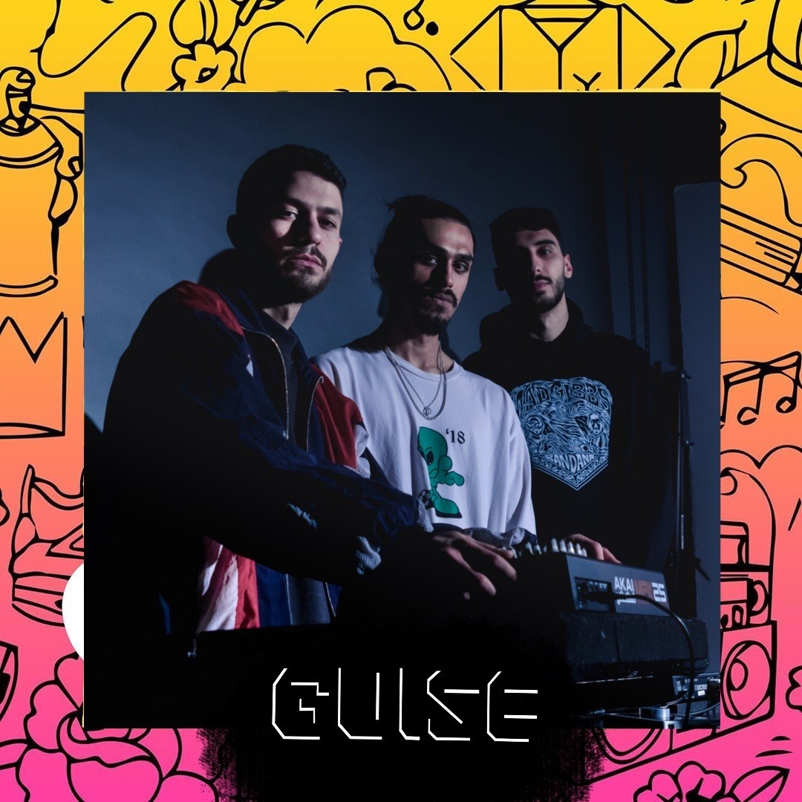
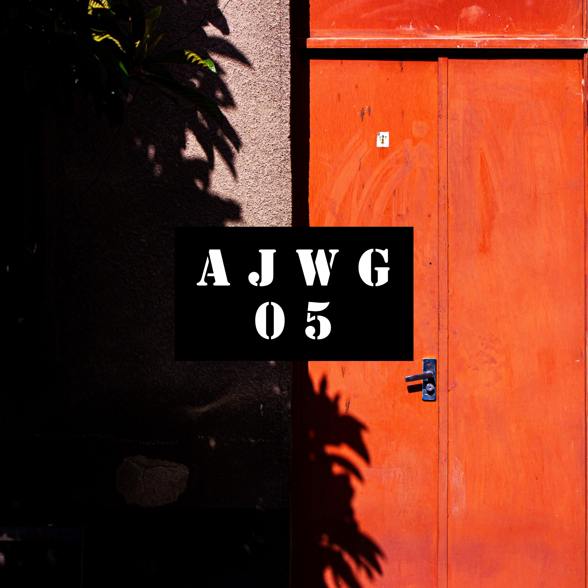
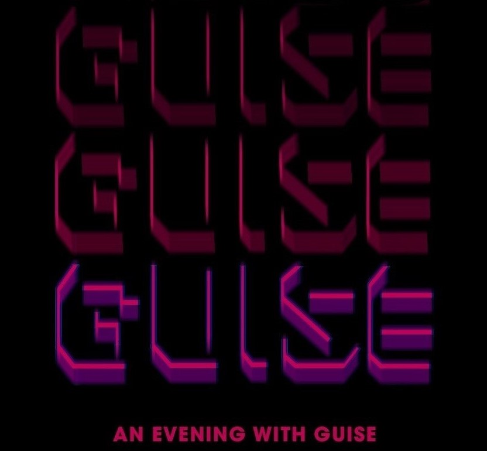

The Cooperators
As a Jr. Systems Developer at The Cooperators, I was able to implement and launch high impact features to market from a legacy CRM into the Salesforce CRM in order to assist our advisors in serving over 5.2 million users.
As a Jr. Systems Developer at The Cooperators, I was able to implement and launch high impact features to market from a legacy CRM into the Salesforce CRM in order to assist our advisors in serving over 5.2 million users.

As a Defence Scientist Student at Defence Research and Development Canada, I was tasked with developing a web application from an infrastructure portfolio in order to help stakeholders make data-driven decisions related to the retention, transfer, or sale of over 200 properties.

During my time at the uOttawa IT Services, I championed a project aiming to develop a platform for students at uOttawa to explore, track, and apply to Experiential learning opportunities related to their degree while allowing administrators to manage and evaluate their progress.
Below are some Academic and Extracurricular Projects I've completed
To get familiar with API's and Cloud services, this project is a bot utilizing the Twitter API and Marvel API in order to fetch Comic Books and schedule tweets containing the comic book's cover art. The project was completed using Python and is deployed and hosted on AWS Lambda, it uses the Tweepy Python Library to access the Twitter API and is scheduled to run once a day using a Coudwatch trigger.
Using Python, Pandas and Tableau, our team cleaned and analysed over 40,000 data points for the Treasury Board of Canada Secretariat to create a visualization that would help explore and understand how programs related to business innovation and growth support would change over time.
Designed a 6-axis articulated robot as part of a waterfront waste removal initiative, to be able to traverse various terrain autonomously in order to remove and store litter for approprtiate disposal. The robot was designed and modelled using SolidWorks and MATLAB.
Our team iterated through the complete product life cycle of an automated smart vent that allowed for control of individual room temperature in a home. We conducted several iterations of testing and validation, as well as market research, customer surveys, and forecasting for product viability. The system was designed using SolidWorks, Multisim, C++, and 3D printed for rapid prototyping.
Developed a multipurpose object detector using Computer Vision concepts in Python and OpenCV. The program was designed to count the number of people entering and leaving the uOttawa gym or library, in order to display the current capacity of the location in real-time on a web-based application for approximately 40,000 students to view, allowing the user to determine the best time to visit the gym or library.
Controlled levitation of a magnet to demonstrate knowledge of control systems, modelling, and design. Modelled and designed in SolidWorks and MATLAB, Circuit Design in MultiSim, prototyping using an Arduino microcontroller, and 3D printed.
During freshman year, my friends and I formed a collective known as GUISE. As individual creatives and artists, we were brought together through our mutual love for music as an art form, our aim was to shed light on unheard music, ranging from our local community to the far corners of the globe, bridging the gap between the underground and the mainstream. Through our efforts, we worked to establish a platform for the creative scene in Ottawa.
 As a collective of DJ's, music producers, recording artists, managers, and musicians, we spent the first 4 years collaborating with several creatives in Ottawa, creating Audio-Visual experiences with fashion designers, restaurants, eventspaces, and charities in order to give back to the community and emphasize the talent and culture Ottawa has to offer. Alongside our events, we began curating mixes on soundcloud as " A Journey with Guise", mixes exploring different sounds and genres that have been resonating with us.
The culmination of our efforts presented us with the opportunity to organize and host a regular event called 'An Evening With Guise', which included an interactive and collaborative night of DJing and live performances. The event was a major success, and has provided us with a platform to create a space for the up and coming talent in the scene, and to educate the people on the origins of their favourite music, as well as the diversity of music worldwide. If you would like to know more, all the links to the social media and SoundCloud can be found below.
For any questions or details, you can reach me below.